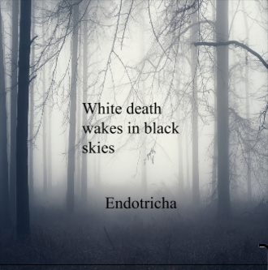

Challenge: Design a Band
Challenge Information
For this challenge we tested which bands everyone liked and what colors everybody likes and what font looks better like san serif or sans and we also did design thinking and thats coming up with something in your mind so we used that to create a band album cover,a band name,and we also had to create a band bio which is the background of your band like when did they meet,why did they want to create a band.etc and we also had to use emathy which is tryng to connect to someone elses problem there fore the idea here is thinking of something that is deeply and work on fuhter to make something that everyone will like.
Album Cover
Band Biography
Our band members are me (Ram),Tim,J-STAR,Colestio. We started in highschool and we all got instruments for our birthday’s and we went to tim’s garage and we started playing mostly playing all the genres like rock and hip-pop because of the bands skillet,three day grace,and linkin park and we got inspired to play our instruments tim started playing the drums and J-STAR started practicing singing and Colestio practiced base and me i just started to play the guitar and tim had this friend that worked in a club and convinced his boss to let us play there as our first gig.after that gig we were trying to come up with names for our album but as days go on the sadest thing happen to us our leader tim got into an overdose on heroin because his girlfriend cheated on him then we had no one to play drums but we still had a gig but first we went to tim's funeral and his parents were devastated so i went up to them and i promised to them that we will get famous and we will honor tim in many songs and just one last thing to mention tim had this werid favorite anaimal that it was a type of butterfly and the name was endortricha.
When we were making are creating our music we knew a lot of bands but the one that stood out to us the most was a lot of bands like three day grace,linkin park,dead by april but the band that most inspired us was skillet because he had a lot of songs that connected to us personally and that music made us bond together as a group so we decided to make a band and to make songs that sounded like the songs of skillet but we werent going to copy of the lyrics we were going to make songs that would connect to people around the world.